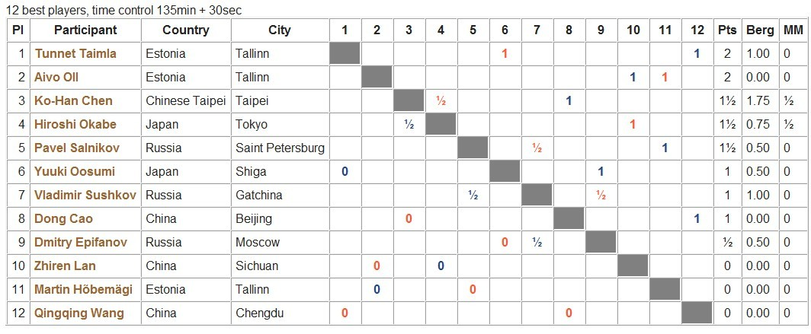

AT前两轮已经结束， 以下是截取自RIF官方网的战绩表

［ 屏蔽同学于 2013-8-8 7:41:31 时花20金币送鲜花一朵］
［ 屏蔽同学于 2013-8-8 7:41:31 时花20金币送鲜花一朵］
［ 我是元芳同学于 2013-8-8 8:57:00 时花20金币送鲜花一朵］
［ 我是元芳同学于 2013-8-8 8:57:00 时花20金币送鲜花一朵］
谁能解释一下这个是什么： 原文地址http://renju.net/media/tourninfo.php?tournament_id=1491
| Gomoku World Championship | Games (12) |
| Estonia, Tallinn, August 2013 (08-07 - 08-14), Gomoku - swap2 rule |
12 best players, time control 135min + 30sec
| Pl | Participant | Country | City | 1 | 2 | 3 | 4 | 5 | 6 | 7 | 8 | 9 | 10 | 11 | 12 | Pts | Berg | MM |
|---|---|---|---|---|---|---|---|---|---|---|---|---|---|---|---|---|---|---|
| 1 | Attila Demján | Hungary | Délegyháza | 1 | 1 | 2 | 2.00 | 0 | ||||||||||
| 2 | Pavel Laube | Czech Republic | Prague | ½ | 1 | 1½ | 1.75 | ½ | ||||||||||
| 3 | Vladimír Nipoti | Czech Republic | Prague | ½ | 1 | 1½ | 1.25 | ½ | ||||||||||
| 4 | Mikhail Kozhin | Russia | Dubna | 1 | ½ | 1½ | 1.25 | 0 | ||||||||||
| 5 | Gergő Tóth | Hungary | Mezőkövesd | 0 | 1 | 1 | 0.50 | 0 | ||||||||||
| 6 | Viktor Balabhai | Russia | Saint Petersburg | 0 | 1 | 1 | 0.50 | 0 | ||||||||||
| 7 | Adrian Fitzermann | Poland | Kwidzyn | 0 | 1 | 1 | 0.00 | 0 | ||||||||||
| 8 | Michal Zajk | Poland | Reda | 0 | 1 | 1 | 0.00 | 0 | ||||||||||
| 9 | Maxim Karasyov | Russia | Nizhny Novgorod | 0 | ½ | ½ | 0.75 | 0 | ||||||||||
| 10 | Renee Pajuste | Estonia | Haapsalu | 0 | ½ | ½ | 0.25 | ½ | ||||||||||
| 11 | Ilya Muratov | Russia | Moscow | 0 | ½ | ½ | 0.25 | ½ | ||||||||||
| 12 | Michal Zukowski | Poland | Zmigrod | 0 | 0 | 0 | 0.00 | 0 |
这样啊，貌似发错地方了。。。。